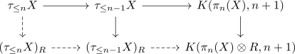
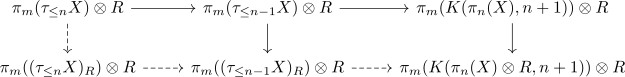
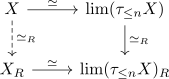

explicit description of the R-localization of a simple and connected anima
Proposition
Let $R\subseteq \mathbb{Q}$ be a subring and $X$ a connected & simple anima. Then there exists a map $f: X \rightarrow X'$ such that
- $X'$ is simple
- $\pi_*(X')$ is an \(R\)-module
- $f$ induces an isomorphism on $\pi_*(-) \otimes R$
In particular $f: X \rightarrow X'$ is (up to equivalence) the unit
Proof
Proof by induction: indcut over the Postnikov tower of $X$, i.e.
induction basis
(cf. simple anima has abelian fundamental group, truncation of a simple anima is simple) use:
induction step
Assume the unit is already defined for $n-1$.
Then there exists a diagram
\begin{displaymath}
\begin{tikzcd}
\tau_{\leq n} X \rar & \tau_{\leq n-1} X \rar \dar & K(\pi_n(X), n+1) \dar \\
(\tau_{\leq n-1} X)_R & K(\pi_n(X) \otimes R, n+1)
\end{tikzcd}
\end{displaymath}where we get a map $(\tau_{\leq n-1} X)_R \rightarrow K(\pi_n(X) \otimes R, n+1)$ by the universal property of the localization.
now define $(\tau_{\leq n} X)_R$ as fiber
and then the unit will be the induced map on fibers:

Then consider the long exact sequence of a fiber where we apply $\otimes R$ which is exact since the localization is flat

pasting together
Then define
and use limit of anima with eventually constant homotopy groups for
